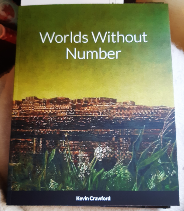
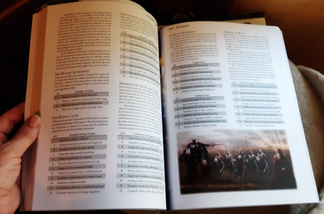
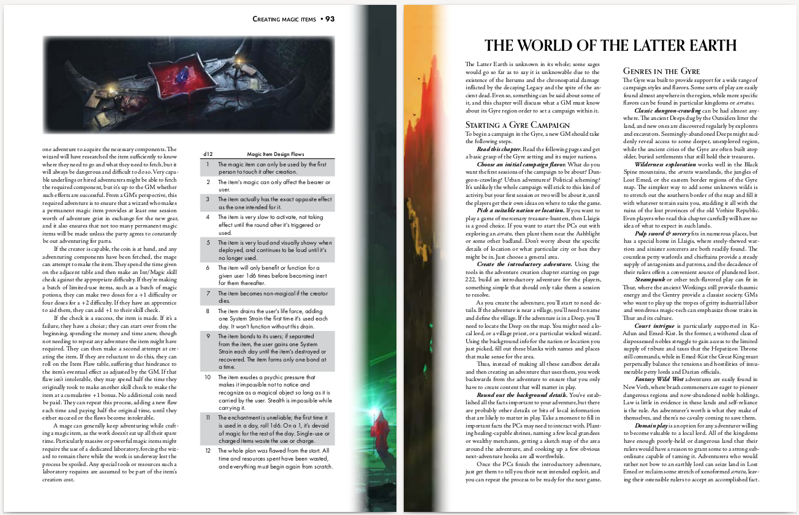
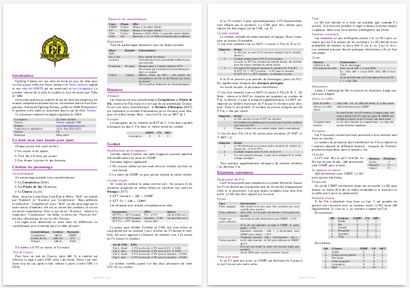
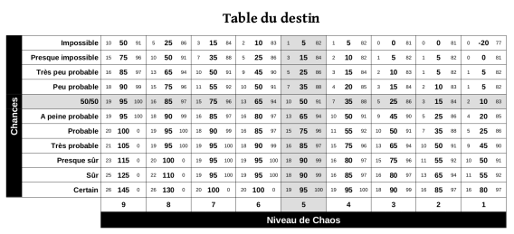
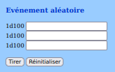
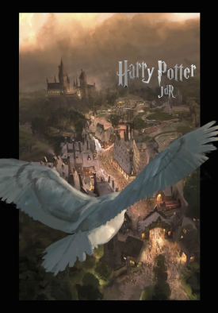
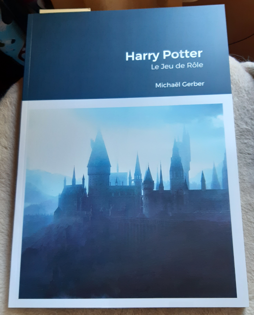
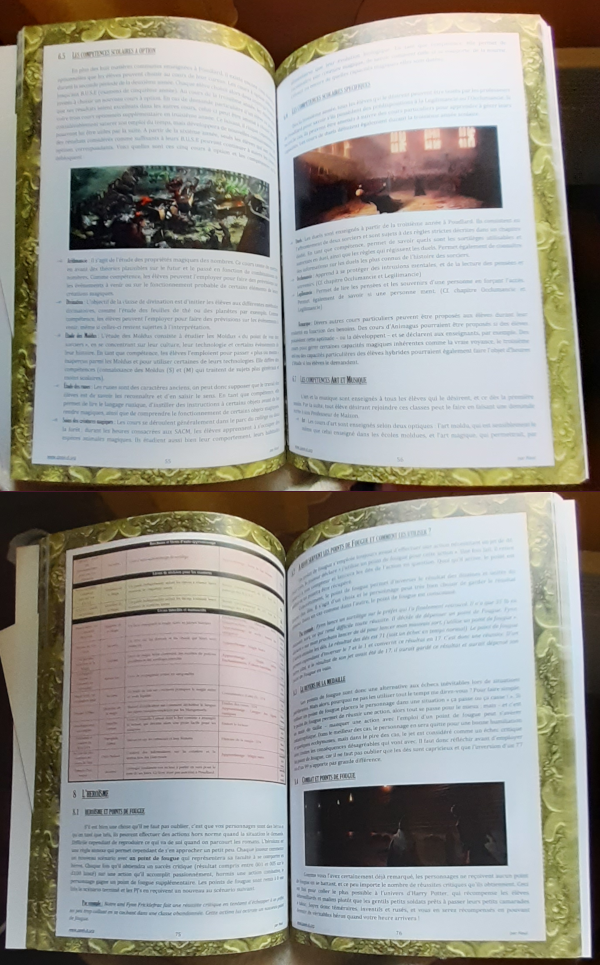

Juin/juillet 2022
Fighting Fantasy (1984) en deux pages#
Même si le jeu ne contient pas de système de magie, il est intéressant à plus d'un titre car il possède une ossature très saine qui fera qu'il ne ne cessera d'être repris, par exemple par Troika!
| Caractéristique | Commentaire |
|---|---|
| Skill (1d6+6) | Permet la comparaison avec un seuil (2d6 ≤ Skill) |
| Permet le combat en opposition (comparaison de Skill + 2d6 + modificateurs chez les deux combattants) | |
| Permet l'application de bonus et de malus (avec des probabilités linéaires) en fonction des armes, ou des conditions | |
| Permet l'utilisation de "compétences avancées" (genre de bonus permanents au Skill) (*) | |
| Stamina (2d6+12) | La notion de points de vie rend moins vague l'état des blessures du personnages |
| Cette notion permet une magie basée sur la consommation de Stamina (*) | |
| Luck (1d6+6) | Cette notion permet de sauver les héros en cas de problème, tout en ne donnant pas un chèque en blanc |
(*) Extensions que l'on trouve à la fois dans
En gros, le jeu est très sain dans sa structure et d'une simplicité telle qu'on peut jouer avec des enfants très rapidement.
A consommer sans modération : la version française sur le site :
| FightingFantasy-VersionFrancaise-OreyJdr13.pdf |
Et aussi sur Itch.io : https://rouboudou.itch.io/fighting-fantasy
Ahahahah ! (rire sardonique)#
La Poste a livré une journée en avance mes commandes Lulu. Encore une fois, je suis surpris de la qualité de ces impressions.
World Without Number#

Le premier bouquin reçu est l'impression de la version gratuite de Worlds Without Number de Kevin Crawford. La couverture est cartonnée souple et l'intérieur est en couleurs.

Moins de 15€ en impression chez Lulu, c'est incroyable.
D&D 4e Player's Handbook#
Le second bouquin était une tentative : le Players's Handbook de D&D 4ème édition. A partir du PDF, je me suis recomposé une couverture cartonnée dure avec les modèles de Lulu.

Pour ceux qui ne le savent pas, Lulu crée un PDF pour la couverture avec juste la bonne épaisseur sur la tranche selon le nombre de pages et les options prises pour le papier. Le résultat est impeccable.

Le livre fait un peu plus de 18€, tout en couleurs...
En fait, j'aurais bien voulu acheter un reprint sur DriveThru ou DmsGuild, mais les livres de règles de la quatrième édition ne sont plus édités. J'ai cherché un peu une occase mais bizarrement, je n'ai rien trouvé d'intéressant.
Je vais pouvoir, avec 14 ans de retard, juger de cette édition qui fit couler beaucoup d'encre dans le monde du JDR. C'est mon côté archéologue.
Autres éditions de D&D#
En fait, je n'ai jamais joué qu'à
Avec le recul, je me dis que pas mal de MJs devaient adapter un peu les règles à leur sauce, car ne serait-ce que l'anglais de certains d'entre eux était quand même approximatif.
Pour les gens qui seraient intéressés, j'ai réuni dans un repo git quelques articles dudit Gary écrits dans des vieux Dragon. C'est ici : github.com/orey/DandD
Comme je n'ai jamais beaucoup joué à

Donc, il y a deux ans, je n'avais rien. En me remettant un peu dans le coup, j'ai découvert la vague OSR et la fameuse version
Puis j'ai repris les investigations sur
Voilà. Pour l'instant, la première édition d'
Pour la 4e, c'est vraiment une tentative. Il va me falloir un certain temps pour lire le livre et me faire une idée. Surtout que j'ai déjà
Worlds Without Number (WWN)#
J'avoue que je ne suis pas facilement impressionné par les JDR actuels.
J'ai, par exemple, dans le contexte Ennies 2022, passé un peu de temps sur la synthèse Level 1 de 9thlevel 2021 et même 2020 et là, pour moi, on est dans un autre monde... loin de DCC et du JDR tel que je le connais.
Par exemple,
Bref, venons-en à WWN. J'avais lu quelques trucs sur ce jeu, en fait plutôt sur Stars Without Numbers. Je télécharge et je tourne les pages. Déjà, le volume du livre me semble inhabituel (352 pages). C'est de l'OSR mais avec pas mal de choses intéressantes.

Puis en page 94, le monde commence à être décrit, puis viennent 200 pages environ de tables pour créer sa campagne, son aventure, etc. Ouahou, quel gigantesque travail. Résultat, je me fais une commande de version gratuite sur Lulu et cette dernière doit arriver demain. Je pense que je vais l'emporter en vacances car c'est une somme impressionnante qui mérite un peu d'attention.
Voir : Worlds Without Numbers Free Edition
Au fait, les votes pour les Ennies 2022 se terminent ce soir ! A quand des Ennies français ?
Fighting Fantasy 1984 en français#
Fighting Fantasy (FF), le moteur des Livres dont vous Êtes le Héros#
Le premier volume de la série fut publié en livre de poche par Pufin en 1982. Cette série propose un système de jeu de rôles très simple qui fut ensuite complété de diverses façons, notamment dans le livre
Une modeste synthèse des règles en deux pages#

Le document de deux pages que je viens de terminer reprend les règles originales de 1984. J'avais déjà un draft en stock mais je n'étais pas totalement satisfait de la présentation (manque de temps pour finaliser les choses).
Comme je voudrais poster cette synthèse de deux pages du
La version de 1984 est super légère :
- Elle ne possède pas le système de compétences avancées que l'on trouve dans
Dungeoneer , - Elle ne comprend pas de système de magie.
Le contexte Troika!#
Je suis en train de traduire
Comme le système de jeu de
En fait, ce qui me botte dans ce système, c'est son accessibilité, et notamment la capacité de jouer avec des ados en quelques minutes. Comme avec Ghostbusters, le système se maîtrise en un rien de temps.
Reboot de Advanced Fighting Fantasy#
A ce propos,
News#
Voilà les sujets qui m'ont occupé ces derniers temps :
- Je poursuis la traduction de
Troika! C'est un gros travail surtout dans un contexte de manque structurel de temps. Elle sera sans doute gratuite. - Vu sur itch.io, le supplément Fangenoire pour Périlleuses Contrées, par OSR-VF. Un gros travail de super qualité !
- J'ai acheté et lu le jeu Colostle mais je n'ai pas eu le temps de tester. L'univers est amusant mais cela ressemble quand même à un jeu pour enfants.
- J'ai voté pour les Ennies 2022 et ce fut un gros travail. Quelques trucs intéressants dans la scène TTRPG alternative mais il faudrait que j'ai plus de temps. Rien que de voter sérieusement m'a pris plusieurs heures en plusieurs jours. Vous avez jusqu'au 24 juillet 2022 pour voter : https://vote.ennie-awards.com/vote/2022/
- J'ai eu
The Witcher TTRPG comme cadeau d'anniversaire mais je n'ai pas encore démarré la lecture. - Il faut que j'intègre le facteur de chaos au eGME (voir plus bas).
A propos de la première version du "eGME" en ligne#
La version du GME (beta) fait appel à quelques concepts de
Concept 1 : les scènes et leur structure#
Le jeu solo est un ensemble de scènes. Ces scènes font apparaître des PNJ et des pistes (des intrigues).

Concept 2 : la scène a trois états#
La scène possède 3 états différents :
- Au début, on décrit comme elle commence, elle est "normale" ;
- Elle peut être "altérée", soit modifiée suite à un événement ;
- Elle peut être "interrompue", ce qui signifie qu'autre chose se passe (piloté par un événement aléatoire
Concept 3 : le facteur de chaos#
Dans Mythic et ses extensions, il existe plusieurs façons, en début de scène, de savoir si cette dernière subit une modification. Dans le Mythic GME, c'est le facteur de chaos qui pilote ce paramètre.

Le principe du facteur de chaos est que, en fin de scène, suivant ce que le PJ a maîtrisé ou pas, le facteur de chaos diminue ou augmente. Plus le facteur de chaos est grand, plus le risque d'avoir un événement aléatoire est important.
Le facteur de chaos est testé en début de scène. Il décide si une scène doit être modifiée ou pas.
Ce concept est très intéressant car il rend le GME à la fois plus incertain et piloté par un genre de contexte extérieur de maîtrise du PJ.
Pour l'instant, le facteur de chaos n'est pas implémenté dans le GME et la raison est expliquée ci-dessous.
Concept 4 : le facteur de chaos comme perturbateur des réponses de l'oracle#

L'oracle de Mythic est basé sur une estimation de la probabilité d'occurrence d'un certain événement. En fonction de cette probabilité, le jet de 1d100 aura plus ou moins de chances de faire dire "oui" à l'oracle.
L'idée de Mythic GME est que le facteur de chaos devrait intervenir comme élément perturbateur dans les réponses de l'oracle. Cela donne la table du destin en figure 2.
Le parti pris par Tana Pigeon, créatrice de Mythic, est d'augmenter les chances pour l'oracle de répondre oui à la question quand le facteur de chaos est élevé.
Cette option est au final, assez inadaptée, car, durant toute la scène, l'oracle aura une façon de répondre homogène mais distordue. De plus, il est alors facile de lui poser des questions auxquelles le joueur voudrait qu'il réponde oui. J'ai implémenté cette version de l'oracle ici, mais elle n'est pas utilisée dans le eGME.
Tana Pigeon, consciente du problème, a proposé dans Mythic Variations 2 une autre façon d'intégrer l'impact du chaos dans l'oracle. J'avoue que cette solution est plus maligne car elle plus aléatoire. Elle est aussi implémentée là. Mais elle n'est pas utilisée dans le eGME.
En fait, je ne suis pas satisfait de ce game design. Après une analyse qu'on pourra trouver ici, je me suis mis à tester en mode papier une autre version de cette intégration.
Concept 4 : l'événement aléatoire#
Mythic et Mythic Variation 1 offre différentes façons de générer un événement aléatoire.

Cette fonction est implémentée dans le eGME et elle est bien. On pourrait certes challenger les tables sur lesquelles elle repose, mais au final, cette fonction est très utilisable.
Un des problèmes de game design est : quand invoquer cette fonction dans le jeu, surtout si l'on veut l'invoquer dans le cadre d'une question posée à l'oracle ?
Quels sont les besoins ?#
Une des façons d'intégrer un événement aléatoire dans le résultat de l'oracle est par exemple de déclencher cet événement sur un jet de dés double avec 1d100. Cela fait une chance sur 10 d'avoir un événement aléatoire.
On pourrait aussi faire un test de chaos à un certain moment, en fonction d'un résultat donné par l'oracle.
L'oracle répond de manière classique les choses suivantes :
- Oui et...
- Oui
- Oui mais...
- Non mais...
- Non
- Non et...
On pourrait convenir que dès que l'oracle répond "et..." alors un événement aléatoire se produit, soit positivement, soit négativement. Il est aussi possible de faire en sorte qu'un événement aléatoire ne se produise qu'en cas de "non et...", car dans ce cas, potentiellement, il faut, dans tous les cas, que le joueur trouve une autre solution.
Voilà l'état de mes réflexions sur le sujet. Pour le moment donc, le facteur de chaos n'est pas implémenté, mais j'y songe.
La première version de mon GME en ligne#
C'est ici : GME (beta)
Il fait pas mal de choses et est 100% utilisable offline. Il faudrait sans doute que j'harmonise les couleurs avec le site. Je commenterai une autre fois, je manque de temps.
Pour mémoire, GME = Game Master Emulator.
Harry Potter le JDR, le top du top#

Bon, je ne suis pas souvent impressionné par les productions françaises mais là, force est de constater que nous avons un jeu d'une qualité remarquable.
Comme je débarque après plus de deux décennies sans JDR, j'avoue que je connais pas Keul, l'auteur du jeu, mais son travail est vraiment remarquable :
Bon, certes, j'aime bien, le
A tel point que j'ai demandé à Lulu de me l'imprimer.


Je comprends qu'il y a un problème de droits, mais Keul devrait sans doute se rapprocher de J. K. Rowling ou de son agent, car son JDR est le plus complet et le mieux fait que l'on puisse voir sur le sujet (même si d'autres ont tenté, en français).
Bravo à Keul encore pour ce travail impressionnant !
Analyse de la table du destin de Mythic GME#

Je travaille en ce moment à une petite collection de programmes permettant de jouer en solo avec une construction d'histoire dynamique. Mon inspiration est
C'est pour moi une occasion de travailler sur le game design de ces GME, dans la continuité des sujets Grande Liste des intrigues de JDR et Morphologie du conte de Vladimir Propp.
C'est un vieux sujet que je mature depuis quelques temps.
La structuration de l'histoire via